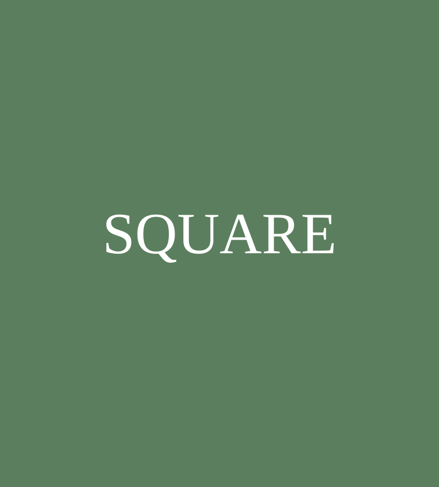

Letterboxed Plates
The harbour survey ran for three summers. Each season the team photographed the same stretch of quay from the same three points, so that the pictures could be laid side by side and read as one record of the slow collapse of the old sea wall.
The first summer was mostly calibration. The boat drifted, the tide tables were wrong by twenty minutes, and half of the plates had to be retaken in the second week once the team had learned where the light fell at each hour of the morning.
By the second summer the routine held. The pictures below are the three fixed points, taken on the same morning in the last week of the season, in the order the boat reached them.



The third summer added the night series, which is published separately. The council has the full set, and the team expects to repeat the survey in five years once the new wall is finished.